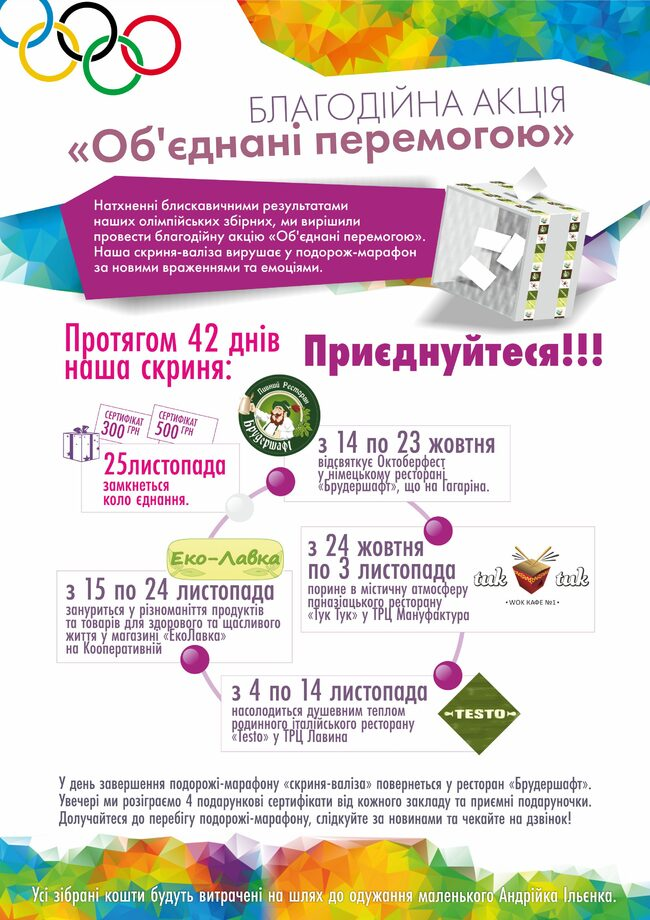
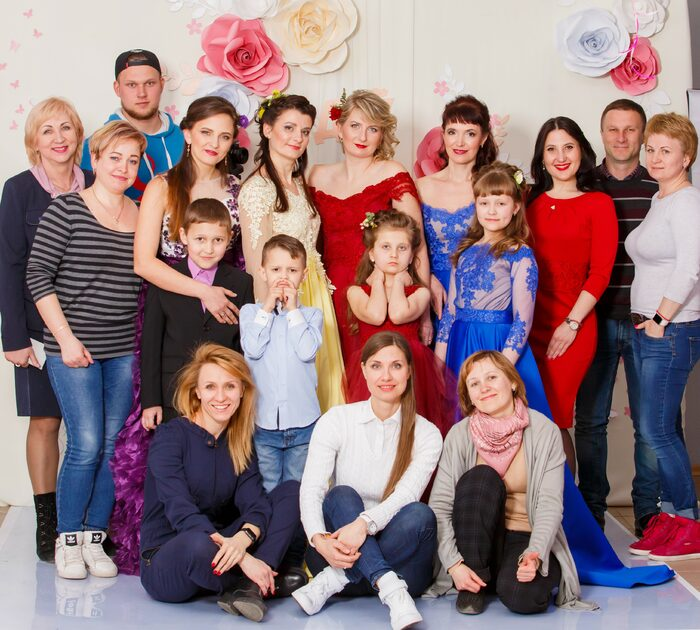
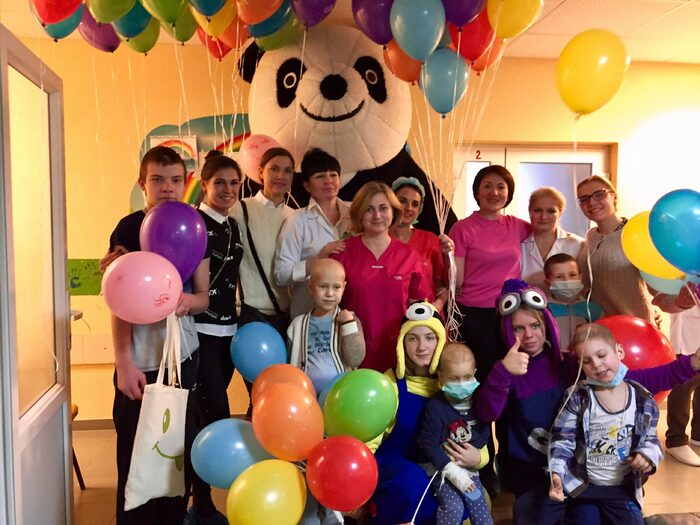
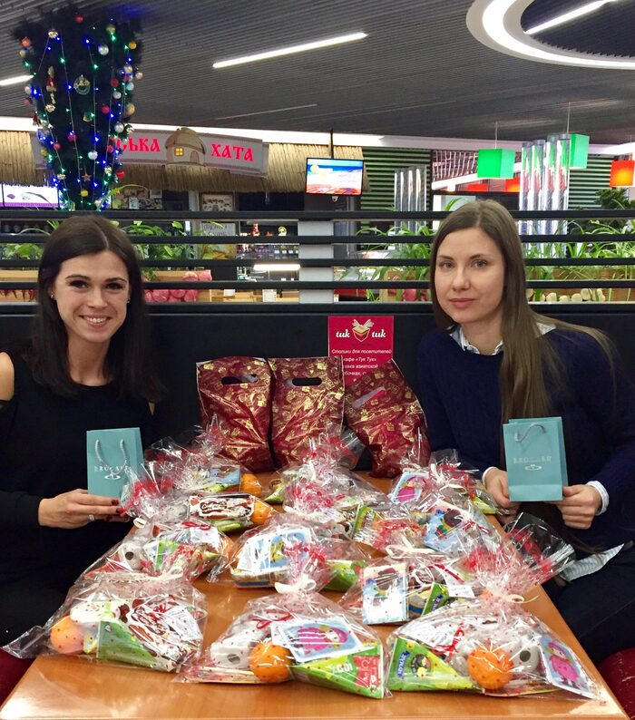
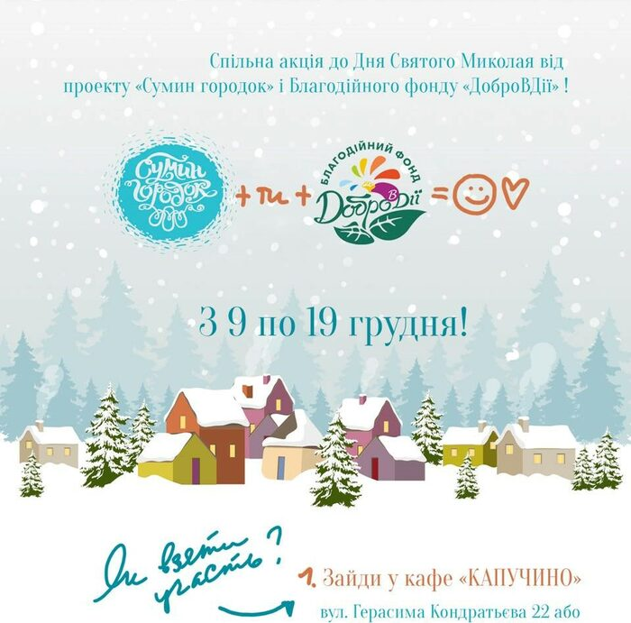
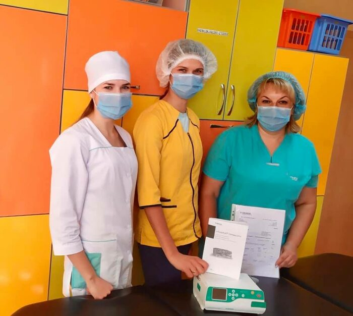
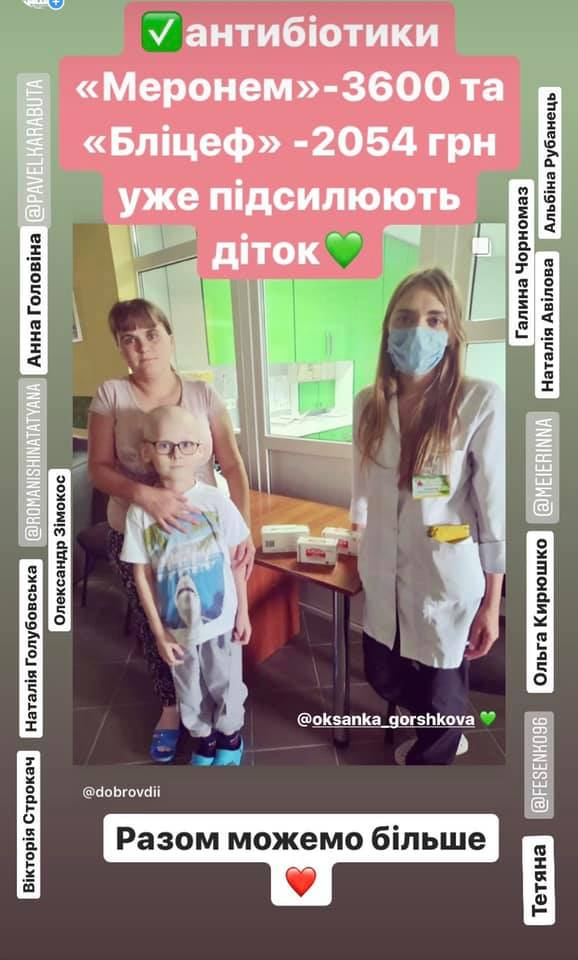

Підсилюємо дітей сумської онко-гематології медикаментами та яскравими емоціями з 2016 року
Хочу допомогтиБлагодійний Фонд «ДОБРОВДІЇ»
Протягом 5 років ми систематично, прозоро та дієво підсилюємо маленьких пацієнтів Сумської онко-гематології. Усі 100% донацій направляються на закупівлю необхідних дітям ліків, медичного обладнання, проводимо благодійні акції та заходи, що направлені на популяризацію волонтерської діяльності, толерантності та гуманності в суспільстві.
Усе розпочалося в 2016 році з підтримки маленького хлопчика Андрійка в боротьбі з лейкемією (початок та деталі тут). Зовсім скоро переросло у волонтерську діяльність, що стала не лише прозорою та чесною (близько 1 мілн. грн було зібрано та витрачено на потреби дітей), а й трансформувалося в МІСІЮ – збереження життя та об’єднання людства.
Завжди хочеться зробити більше, відреагувати швидше, допомогти ефективніше, але наші можливості обмежені кількістю та частотою благодійних внесків. Мріємо про розширення меж своєї діяльності з області до країни, а потім і світу. Тому кожна пожертва важлива та життєво необхідна.
РАЗОМ МОЖЕМО БІЛЬШЕ!
Благодійні акції
Благодійні акції на підтримку дітей з онкодіагнозами
-

Благодійна акція «Об’єднані перемогою» жовтень 2016
Збір коштів на підтримку в лікуванні маленького Андрійка.
Деталі -

БА «Радій життю! Допомагай із радістю» квітень-травень 2017
Фотопроєкт із дітами та їхніми матусями, які зіткнулися з онкологією. Збір коштів на закупівлю необхідних медикаментів у відділення сумської онко-гематології.
Деталі -

БА «Листопад посмішок» листопад 2017
Формування подарункових торбинок з «посмішками» для дітей зі стаціонара сумської онко-гематології.
Деталі -

-

БА «Книги до Миколая» грудень 2019
Спільна акція з авторками книги «Сумин городок», з 10 по 19 грудні усі кошти від продажів книг направились на придбання ліків.
Деталі


Новини
Ми систематично публікуємо новини на сторінках соціальних мереж тут
-

03.11.2021
Передали у відділення життєво-необхідні антибіотики
У жовтні виповнилося 5 років із дня заснування Сумського Благодійного Фонду «ДОБРОВДІІ». За цей час, об’єднуючи наші зусилля, ми підсилювали діток у складній боротьбі за здоров’я. Прозоро та чесно, систематично та з детальним звітом, без адміністративних витрат.
Деталі -

13.08.2021
Дуже дієвий антибіотик «Меронем» уже підсилює дітей
5 упаковок антибіотику «Меронем», придбаного за кошти донацій, направилися в Сумську дитячу онко-гематологію. Меропінем є одним із найефективніших антибіотиків, які допомагають малюкам справлятися з інфекціми після хіміотерапії.
Деталі -

21.07.2021
Випускний благодійної школи естетичного виховання «Школярка-Панянка»
У п'ятницю 16 липня відбувся урочистий захід вручення випускних сертифікатів юним ученицям благодійної школи «Школярка-Панянка». Дівчата передали 6700 грн на підтримку маленьким пацієнтам сумської онко-гематології.
Деталі -

01.06.2021
129 систем для Інфузомату завдяки вам уже у відділенні (-9919 грн)
На зібрані кошти було придбано системи для інфозоматів. Через постійні хіміотерапії та підтримуючі крапельниці діти з відділення постійно потребують нових надходжень.
Деталі -

21.06.2021
Сьогодні завдяки вам відвезли ліків на суму - 28 376 грн підсилювати діток у Сумську онко-гематологію
Життєво необхідні ліки 6 уп. «Меронем» (-20 400 грн) 4 уп. «Коломіцин» (-7 976 грн) допомагають дітям боротися з бактеріальними інфекціями.
Деталі -
30.12.2020
Привітання від Миколая
Друзі, вітаємо з прийдешніми святами та бажаємо здоров’я та щастя вам, вашим рідним та близьким!
Деталі -

28.12.2020
Від дітей - дітям!
Зворушливе відео від Dance Centru Artes, Ірини Восмерік, Марина Борщенко за участі Микити Хомайко - супер героя, який за 4 років пройшов складний шлях боротьби з злоякісною Лімфомою Ходжкіна.
Деталі -

16.10.2020
Інфузомат B Braun compact plus (-76 920 грн) придбали завдяки вам.
12 жовтня представник компанії виробника запустив насос та поставив апарат на гарантію та сервіс, тому час звітувати.
Деталі -

14.08.2020
13-го серпня антибіотики «Меронем» (-3600) та «Бліцеф» (-2054 грн) уже допомагають діткам із Сумської онко-гематології
Зараз на рахунку 2451 грн - хочеться вірити, що завдяки спільним діям на добро ми зможемо у вересні придбати життєво необхідний інфузомат, вартістю 80 тис.грн.
Деталі -

18.06.2020
11 флаконів необхідного діткам препарату «Євроцефтаз» (-2081.20 грн) уже допомагають малечі Сумської Онко-гематології
Безмежна вдячність усім, хто долучився в період з 1 травня-18 червня.
Деталі
Допоможіть підсилювати діток
Ви можете внести свій вклад у підтримку діяльності та волонтерства
Приват24Засновниця Благодійного Фонду «ДОБРОВДІЇ»
Якщо у вас виникли питання, напишіть нам: dobrovdii.ceo@gmail.com

Юлія Ісай
Засновниця
Установчі документи